ch5. 속도자료의 수집과 분석
4장에서 우리는 반응기의 설계식과 속도법칙, 화학양론관계를 결합하여 임의의 등온 반응계 크기를 결정하는 알고리즘을 배웠다. 그러나 여기에는 가정이 존재하는데, 바로 속도식이 주어져야 한다는 점이다.
한 가지 희망적인 것은 대부분의 화학공정에서 사용하는 반응들은 이미 반응 속도식이 문헌이나 실험을 통해 잘 정립되어 있는 경우가 많다는 것이다. 특히 산업에서 사용하는 공정에서는 상업적으로 중요한 반응(예: 암모니아 합성, 석유 정제 등)의 속도식이 이미 구해져 있어, 이를 기반으로 공정을 설계한다.
다음이 아니고서야 우리가 이 속도자료를 분석하거나 수집할 일은 적다고 볼 수 있다.
- 연구소나 R&D 부서: 새로운 촉매나 반응 경로를 연구하는 곳에서는 직접 반응 속도를 측정하고 속도식을 구할 일이 많습니다.
- 신규 공정 개발: 기존의 공정을 개선하거나 새로운 공정을 도입할 때 반응 속도를 실험적으로 구해야 할 수 있습니다.
하지만 추후를 대비하여 어떻게 속도자료를 분석하는지 맛만 보도록 하자.
속도 자료해석 알고리즘
1.속도식을 가정하여라.
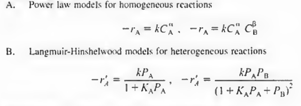
2.반응기를 선택하고 합당한 몰수지식을 세워라.
-보통 실험은 회분식 또는 미분충전층반응기에서 진행한다. 회분식 반응기는 시간에 따른 농도 변화를 추적하는 데 유리하고, 미분 충전층 반응기는 초기 반응 속도를 정확히 측정하는 데 적합하다.
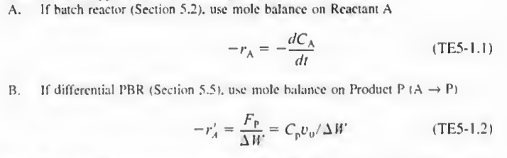
3. 과량법을 통해 속도식을 단순화 하여라.
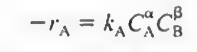
이런 속도식을 가정했을때, 일단 B를 엄청나게 넣으면 B의 농도는 변하지않는 상수가 된다.
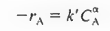 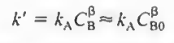
이제 CA만이 변수인 식이 만들어졌다. 이걸 분석하여 a를 구할 수 있다. 이후 A를 과량으로 넣어서 B만 변수로 만들어 b도 구한다.
4. 시간 t에 따른 농도 CA에 관한 데이터를 구한다.
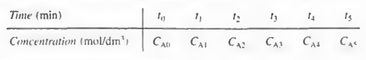
5.이제 분석한다 BY(미분법, 적분법)
-일단 속도자료를 해석하는 법에는 미분법이 있고 적분법이 있다. 먼저 미분법부터 알아보자.
5-1)미분법
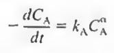
batch에서 몰수지식을 쓰면 위와같다. 이때 우변은 과량법을 써서 CA에 관한 식으로 만든 것이다. 여기에 로그를 취하면
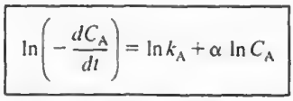
ln(-dCA/dt)를 lnCA의 함수로 도시한 그래프의 기울기가 a임을 알 수 있다.
이제 dCA/dt를 구해야한다.
간단히 엑셀을 켜서 t와 CA에 관한 그래프를 만든 다음 그 그래프의 수식을 구하는 것이다. 이후 이를 t에 대해 미분하면 dCA/dt가 나온다.
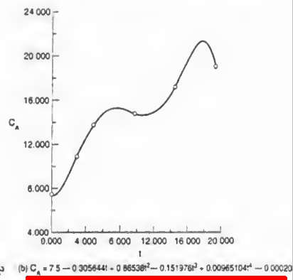
이후 한 점을 선택하여(p) 그 점에서의 농도와 시간값으로 kA값도 구할 수 있다.
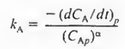
5-2)적분법
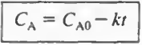 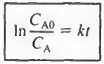 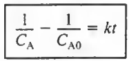
대부분의 반응이 0차, 1차, 2차라는 점에 착안한 기법이다. 일단 t와 CA 데이터를 본 다음 0차 1차 2차 중 하나를 찍는다. 그리고 거기에 해당하는 관계식을 작성해봤을 때 직선이 나오면 가정한 차수는 맞는 것이다.
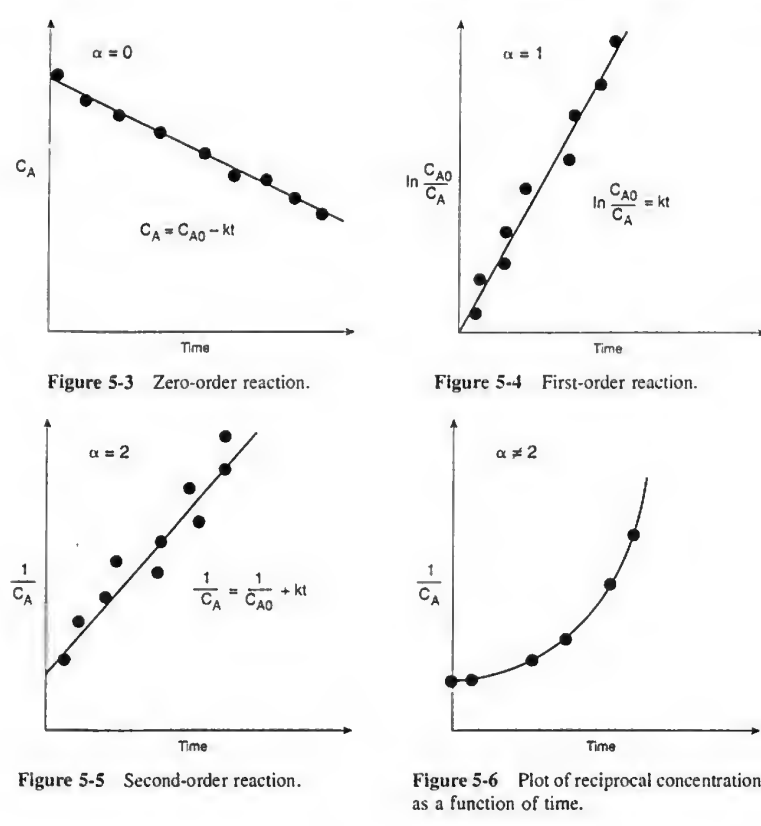
만약 가정한 차수가 0차 1차 2차도 아니라면 어쩔 수 없이 비선형 회귀분석을 해야하며 이는 기기의 도움을 받아야 한다..
정리)
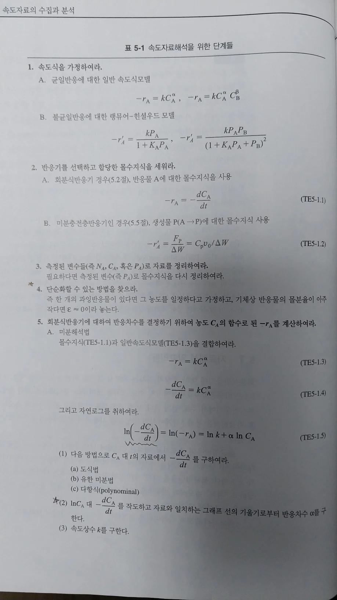 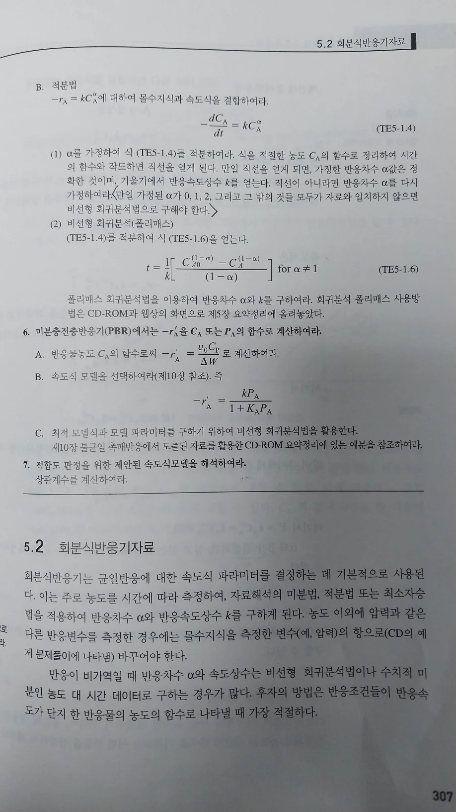
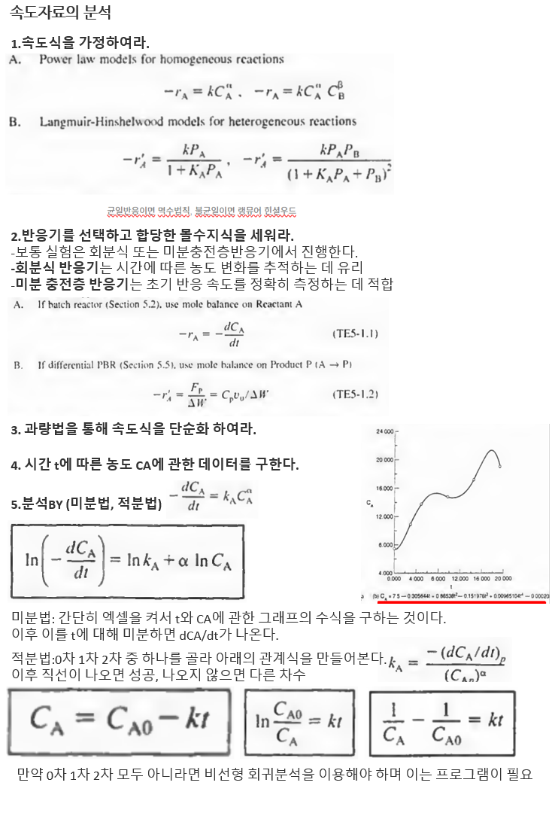